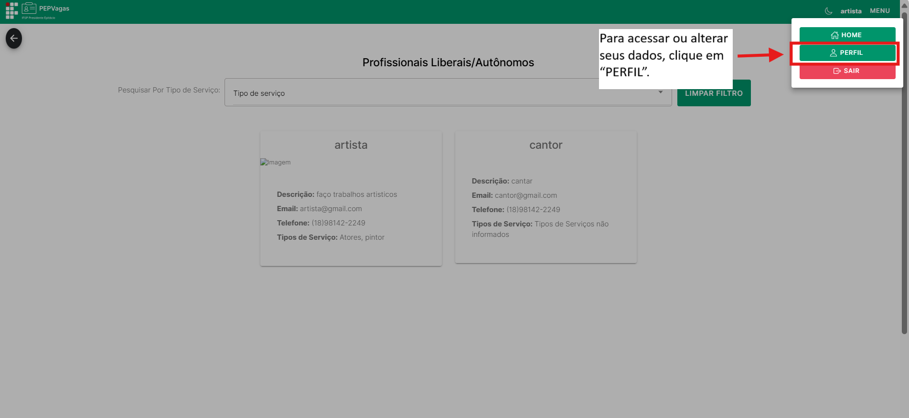

Profissional Liberal
O Profissional Liberal é um perfil destinado a autônomos e prestadores de serviços que desejam divulgar seu trabalho na plataforma PEPVagas.
Ele é ideal para profissionais que querem divulgar seus serviços, atrair clientes e parceiros diretamente na plataforma.
Principais ações
- Criar e gerenciar seu perfil profissional.
- Indicar um ou mais tipos de serviço prestado.
- Receber contato de clientes via e-mail ou telefone.
- Visualizar todos os profissionais liberais cadastrados na Home e filtrar por tipo de serviço.
- Gerenciar suas próprias informações de acesso.
Login
Para acessar a conta de Profissional Liberal, clique no botão Entrar no canto superior direito da tela.

Informe o e-mail e senha definidos no momento em que criou o login e clique em Entrar.

Menu
No canto superior direito, clique no Menu para acessar as funcionalidades:

-
Home – visualizar todos os profissionais liberais cadastrados na plataforma e aplicar filtros por tipo de serviço.

-
Perfil – gerenciamento completo das informações do profissional.

- Sair – encerra a sessão e redireciona para a tela de login.
Cadastro e Gerenciamento do Perfil
(Menu → Perfil)
O profissional deve preencher e atualizar seus dados para garantir que seu perfil seja bem divulgado.
Se você ainda não for cadastrado, clique em Registre-se na tela de login.

Selecione Sou um Profissional Liberal/Autônomo:

Campos do Perfil:
- Nome
- E-mail
- Telefone
- Tipo(s) de serviço prestado (pode informar mais de um)
- Descrição do serviço (detalhe suas habilidades, experiência e o que oferece)
- Imagem de divulgação (foto ou logo do serviço)

Para visualizar e alterar os dados:

Após clicar em "PERFIL", voce será redirecionado para essa pagina:

- Alterar Senha: permite editar a senha de acesso.

Após clicar no botão de alterar senha, essa tela vai se abrir:

- Alterar Perfil: editar dados.

Após clicar no botão alterar perfil, essa tela vai se abrir:

✅ Dica: Preencha todos os campos para que clientes encontrem seu perfil com mais facilidade.
Home – Listagem de Profissionais Liberais
(Menu → Home)
Na Home, o profissional liberal pode visualizar todos os profissionais cadastrados, inclusive o próprio perfil.
Funcionalidades:
- Visualizar perfis – acessar detalhes do perfil de outros profissionais.
- Filtro por tipo de serviço – selecionar um tipo de serviço específico para refinar a lista.
Na tela home de profissional liberal, estão listadas todos os anuncios dos profissionais liberais cadastrados:


Contato de Clientes
Quando um cliente se interessa pelo serviço, ele deve entrar em contato diretamente utilizando os dados informados no perfil do profissional.
Todas as negociações, propostas e confirmações acontecem fora da plataforma, via e-mail ou telefone.
✅ Dica: Mantenha seu e-mail e telefone de contato sempre atualizados para garantir que os clientes consigam falar com você.
Sair
(Menu → Sair)
Clique em Sair para encerrar a sessão. Você será redirecionado para a tela de login.
Espaço para imagem do botão Sair
✅ Dica: Um perfil completo e atualizado aumenta a visibilidade do profissional e a chance de novos clientes.